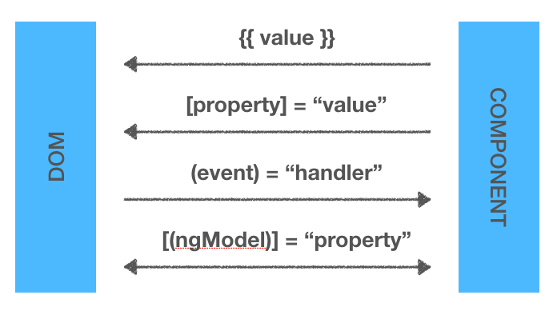

第四章 HTML Binding 與 Event 的處理r
綁定 (Binding)

屬性綁定(DOM Property Binding)
| 方式 | 範例 | html -?- ts |
|---|---|---|
| 文字插值 Text Interpolation | <p>{{ value }}</p> |
|
| 屬性繫結 Property Binding | [disabled] = “value” |
|
| 事件繫結 Event Binding | (click)=”add()” |
|
| 雙向繫結 Two-Way Binding | [(ngModel)] = “value” |
DOM 屬性綁定
DOM Component
| property 名稱 | 範例 |
|---|---|
| Emelent | <img [src]="imageUrl"> |
| Component | <app-child [name]="value1"></app-child> |
| Class | <p [class.myClass1]="isSuccess”>成功</p> |
| Attribute | <td [attr.colspan]="1 + 1">總計</td> |
| Style | <p [style.color]="(isSuccess)?'red':'gray'">Test</p> |
| Directive | <li [ngClass]="{myClass1: isSuccess}"></li> |
Attribute 綁定 (HTML Attribute Binding)
多數的HML Attribute 會對應到 DOM Property，某些 Attribute 只是單純的 Attribute
- Ex. ARIA, SVG, Table 跨列跨行 (span) 的
Success
NgClass 與 NgStyle
Angular 提供可用來動態改變 DOM 元素 CSS 的指令。
| 來源 | 範例 |
|---|---|
| Native Attributes | <p class="myClass1" style="border: 1px;"></p> |
| Angular Bindings | <p [class.myClass1]="isSuccess" [style.border]="isSuccess"></p> |
| ngClass | <p [ngClass]="{'myClass1': isSuccess, 'myClass2': false}"></p> |
| ngStyle | <p [ngStyle]="{'color': 'red'}"></p> |
事件綁定 (Event Binding)
範例：目標事件名稱為 click ，呼叫方法為 SayHi()。
相當於
事件綁定偵聽按鈕的單擊事件，並在單擊發生時呼叫SayHi()方法。
事件的傳遞 (Bubbling)
- 事件傳遞由內向外
測試: Button
$event 事件處理訊息
- 相當於DOM 物件的 event 物件
- 觸發事件的目標物件
- event 物件
- event.target：原始目標
- event.currentTarget：目前這個目標
測試: Button
$event 提供 DOM Event 的相關方法
- preventDefault
- 取消事件預設的行為
- stopPropagation
- 取消事件傳遞行為
- stopImmediatePropagation
- DOM Level 3 新增的功能
- 馬上取消所有的事件傳遞行為
下拉清單 使用 $event.target
- 觸發事件的目標物件
- 如下面範例，$event 可以取得 select 物件
你選擇的是：
表單互動的綁定能力 - ngModel
- 提供表單控制項的綁定能力
- 引入 NgModule，FormsModule
- app.component.ts
- 匯入
[ngModel]、(ngModelChange)
- Source-to-view View-to-source
- [ngModel]
- 設定 html 元素的 value 屬性
- (ngModelChange)
你選擇的是：{{ result }}
<select [ngModel] = 'result' (ngModelChange)="result=$event">
<option value="0101">Java Script</option>
<option value="0102">Type Script</option>
<option value="0103">Angular</option>
</select>
雙向綁定--使用 ngModel
- View-to-source-to-view
- [()] 又稱為 Banana in a Box
- 使用[(ngModel)] 一次搞定
你選擇的是：{{ result }}
<select [(ngModel)] = 'result'>
<option value="0101">Java Script</option>
<option value="0102">Type Script</option>
<option value="0103">Angular</option>
</select>
自訂元素的雙向綁定
- [(ngModel)] 只能用在 HTML 原生的元素
- 無法使用在自訂元素
- @Input
- 宣告自訂元素的輸出屬性
- @Output
- 宣告自訂元素的事件通知
- EventEmitter
- 定義事件的傳遞訊息型別
-
雙向綁定須注意
- @Output 名稱必須 是 @Input 名稱 + 事件名稱
- Ex:
-
EventEmitter 使用 emit 傳遞事件參數
-
search-box.component.html
-
app.component.ts
-
app.component.html
<searchBox [searchText]="mySearch" (searchTextChanged)="mySearch=$event"></searchBox>
<h3 *ngIf="mySearch.length > 0">
找到了 {{mySearch}}!!
</h3>
Style 綁定 (Style Binding)
使用 [style.attribute]
<searchBox [searchText]="mySearch" (searchTextChanged)="mySearch=$event"></searchBox>
<h3 [style.border]="mySearch.length > 0 ? 'solid 3px blue':'solid 3px red'">
<span *ngIf="mySearch.length > 0;else notFound">找到了</span>
<ng-template #notFound>沒找到喔</ng-template>
</h3>
ngStyle 綁定
- 當有多個 style 要設定時，使用ngStyle
- app.component.ts
mySearch:string='';
isTouch: boolean = false;
isFound: boolean = false;
resultStyles = {};
onTextChange(search: string) {
this.isTouch = true;
this.isFound = search.length > 3;
this.resultStyles = {
'border': this.isFound ? 'solid 3px blue' : 'solid 3px red',
'color': this.isFound ? 'black' : 'red',
'background-color': this.isFound ? 'yellow' : 'white'
}
}
- app.component.html
<searchBox [searchText]="mySearch" (searchTextChanged)="onTextChange($event)"></searchBox>
<h3 [ngStyle]='resultStyles' *ngIf="isTouch">
<span *ngIf="isFound; else notFound">找到了{{mySearch}}!!</span>
<ng-template #notFound>沒找到ㄡ...</ng-template>
</h3>
- span 改用 ng-container
<searchBox [searchText]="mySearch" (searchTextChanged)="onTextChange($event)"></searchBox>
<h3 [ngStyle]='resultStyles' *ngIf="isTouch">
<ng-container *ngIf="isFound; else notFound">找到了{{mySearch}}!!</ng-container>
<ng-template #notFound>沒找到ㄡ...</ng-template>
</h3>
ng-container / ng-template
- 兩者皆不會顯示在HTML上
- ng-container
- DOM 的容器，Tag 最後不會顯示在HTML
- ng-template
- 不會直接顯示，透過參考才會呈現
- 是被動的
- 必須被參考到才會啟動
(實作) 綜合練習 - 建立模組
Step 1：加入 Class Model，定義資料內容
Student.ts
export class Student {
id: number = 0;
Name: string = "";
Birthday: Date = new Date();
}
export const students: Student[] = [
{ id: 101, Name:"Mary", Birthday: new Date(2007,3,15) },
{ id: 102, Name:"Lisa", Birthday: new Date(1997,7,15) },
{ id: 103, Name:"Andy", Birthday: new Date(2003,8,15) },
{ id: 104, Name:"Jenny", Birthday: new Date(2022,2,15) },
{ id: 105, Name:"Kiki", Birthday: new Date(1999,4,15) },
]
Step 2： 建立 Component
- page6.component.ts
import { Student, students } from '../student';
// 部分省略
export class Page6Component implements OnInit {
student: Student[] = students;
thisMonth: number;
constructor() {
this.thisMonth = new Date(Date.now()).getMonth();
}
ngOnInit(): void {
}
}
Step 3：使用 *ngFor
- page6.component.html
<div class='table'>
<div class='row' *ngFor="let st of student; let i = index; let o=odd" [style.background-color]='o?"yellow":""'>
<div class='col'>No.{{i+1}}</div>
<div class='col'>{{st.id}}</div>
<div class='col'>{{st.Name}}</div>
<div class='col'>{{st.Birthday | date:'MM-dd-yyyy'}}</div>
</div>
</div>
Step 4： 使用 *ngSwitch
- page6.component.html
<div class='col'>
<ng-container [ngSwitch]="st.Birthday.getMonth()">
<span *ngSwitchCase="thisMonth" style='color: red;'>本月壽星</span>
<span *ngSwitchCase="thisMonth+1" style='color: blue;'>生日快到了!!</span>
<span *ngSwitchDefault style="font-size:x-small">在等等吧!</span>
</ng-container>
</div>

*ngSwitch
- 類似 javascript 的 switch 指令
- 配合 ngSwitchCase、ngSwithchDefault
- 呈現符合條件的元素